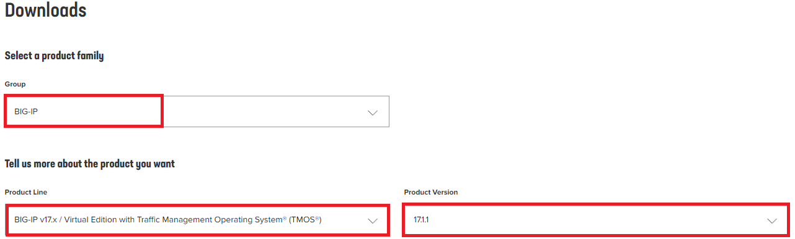
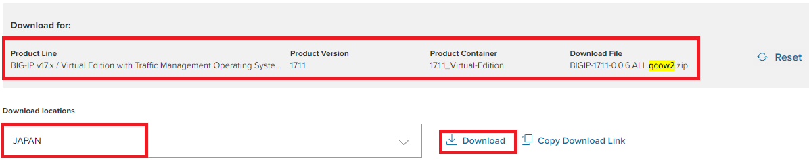
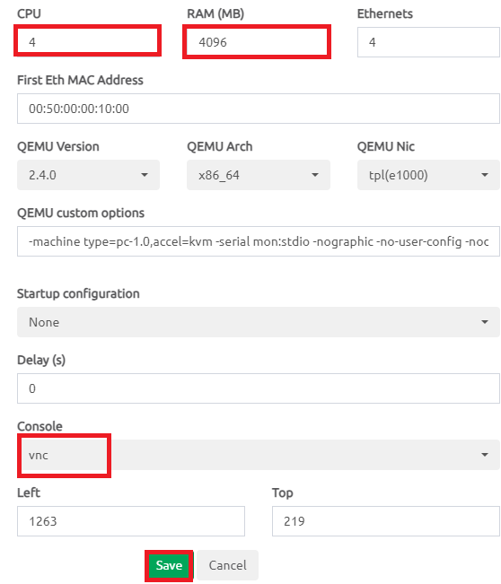
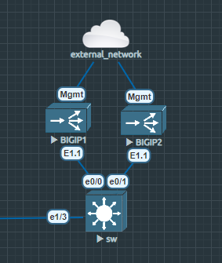
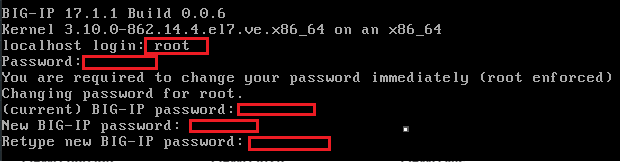
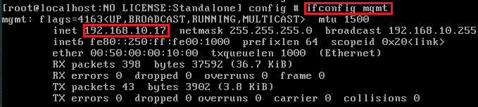
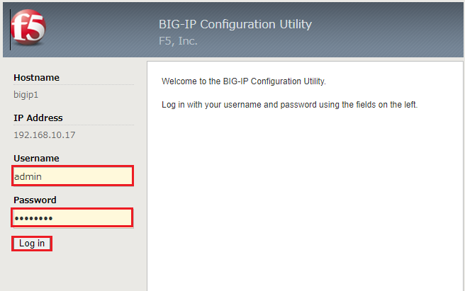
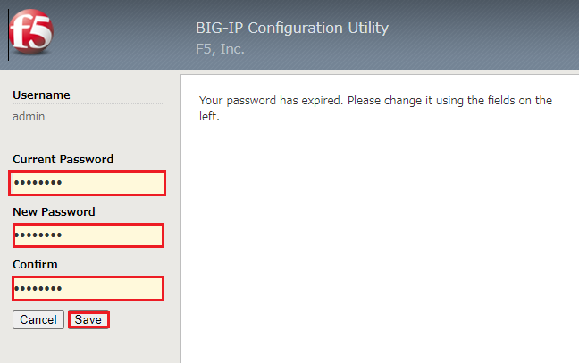
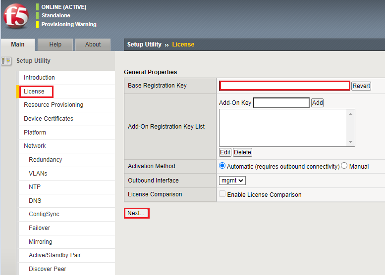
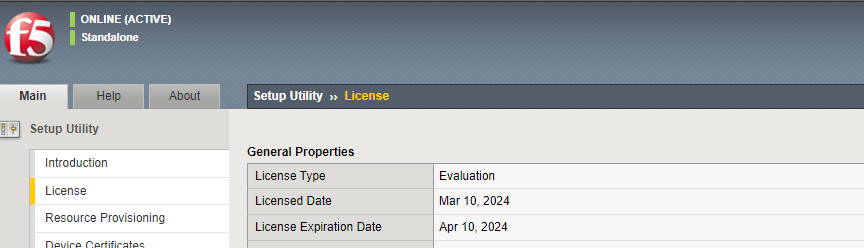

0. はじめに
BIG-IPをEVE-NG上に構築します。
細かい機能確認等は他サイト様が詳しく載せているのでそちらを参照。
情報が無いもの、バージョン差分で動作が変わっているものについては更新するかもしれません。
1. 初期セットアップ
まずはイメージファイルをダウンロードします。
https://my.f5.com/manage/s/downloads
BIG-IPのVirtual Editionを選択します。Product Versionはlatest想定で進めます。

Select a product containerから [latest-version]_Virtual-Edition を選択、
Select a download fileから BIGIP-[latest-version].ALL.qcow2.zip を選択。
画面下部で選択情報とdownload locationを確認し、ダウンロードします。

ダウンロード後、以下リンクからイメージをEVE-NGに追加します。
eve-ng install big-ip images/image
ノードを追加後、デフォルトではvCPUが 1 、RAMが 2048MB になっています。
F5の提示するリソース要件に合わせて変更します。
また、EVE-NG側のBIG-IPのノード追加要件にConsole設定は VNC とあるので、併せて変更します。
https://my.f5.com/manage/s/article/K15796

MgmtインターフェースはDHCPサーバのあるネットワークに接続し、ノードを起動します。 
初期CLIログイン時のクレデンシャルは、root / defaultです。
ログイン後、パスワード変更が求められるので設定します。

mgmtインターフェースはデフォルトでDHCPクライアント設定になっているので、以下コマンドで払い出されたIPを確認します。
ifconfig mgmt

ブラウザからBIG-IPに払い出されたIPにアクセスします。
クレデンシャルは admin / <CLIで設定したパスワード> です。
初回GUIログイン時は再度パスワード変更が求められるので設定します。
https://<big-ip_mgmt-ip>


初回ログイン後、ライセンス登録をします。
左側ペインからLicenseを選択し、Base Registration Keyにライセンスキーを入力します。

アクティベート後に自動構成があり、完了するとライセンスが適用されていることが確認できます。
